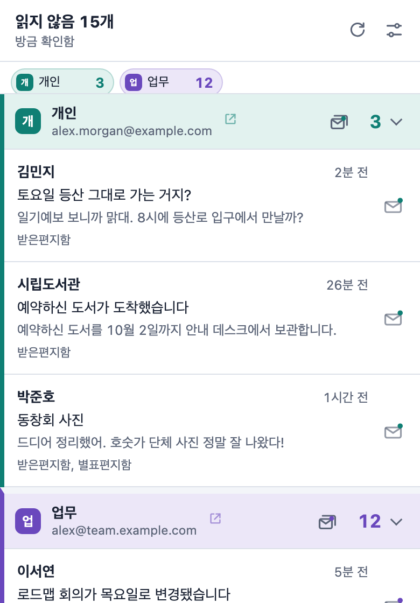

새 메일을
한눈에.
Chrome에 로그인된 모든 Gmail 계정의 읽지 않은 메일 수를 툴바에 표시하고 데스크톱 알림으로 알려 줍니다. 추가 로그인, OAuth, 서버가 필요 없습니다.
무료 오픈 소스이며 8개 언어를 지원합니다.

 4
4중요한 메일은 직접 정하세요
받은편지함, 각 탭, 별표편지함, 중요, 그리고 원하는 라벨을 세 가지 단계 중 하나로 설정할 수 있습니다. 여기서 직접 해 보세요. 설정 페이지의 실시간 미리보기처럼 아이콘과 알림이 선택에 따라 바뀝니다.
- 끄기확인하지 않음
- 개수툴바 아이콘의 읽지 않은 메일 수에 포함
- 알림개수에 포함하고 데스크톱 알림도 표시
미리보기
 4
4여러 메일함도 확실하게 구분
Chrome에 로그인된 Gmail 계정을 자동으로 찾아 목록에서 각각 따로 보여 줍니다.
메일함마다 이름, 색상, 알림음
한눈에, 그리고 알림음으로도 어느 메일함인지 알 수 있습니다.
합계 또는 메일함별 숫자
아이콘에 15를 표시하거나 3/12처럼 메일함별로 나눠 표시할 수 있습니다.
라벨은 목록에서 선택
라벨을 Gmail에서 직접 읽어 오므로 이름을 입력할 필요가 없습니다.
Gmail을 열지 않고 처리
Chrome 어디에 있든 새 메일을 바로 처리하세요.
알림에서 읽음으로 표시
알림을 한 번 클릭하면 Gmail에서도 읽음으로 표시됩니다.
메일함 한 번에 비우기
한 번 확인하면 메일함의 읽지 않은 메일을 모두 읽음으로 표시합니다.
정확한 메일 열기
메일을 클릭하면 해당 Gmail 계정에서 열리며, 열려 있는 Gmail 탭을 다시 사용합니다.
개인정보 보호를 우선으로
Pigeon Post는 Chrome에 이미 로그인된 Gmail을 그대로 사용합니다. 계정을 만들거나 따로 로그인할 필요가 없습니다.
mail.google.com하고만 통신
서버, 분석, 광고, 추적이 없습니다. 개발자에게 아무것도 전송되지 않습니다.
메일은 메모리에만
읽지 않은 메일의 보낸 사람, 제목, 미리보기는 메모리에만 보관되며 Chrome을 닫으면 지워집니다.
필요한 것만 읽기
Gmail의 읽지 않은 메일 피드만 읽고 본문 전체는 읽지 않습니다. 요청한 읽음 표시 외에는 아무것도 변경하지 않습니다.
오픈 소스
모든 코드가 GPL-3.0 라이선스로 GitHub에 공개되어 있어 무엇을 하는지 직접 확인할 수 있습니다.
1분이면 시작할 수 있습니다
Chrome에 추가
Chrome 웹 스토어에서 Pigeon Post를 설치합니다.
Gmail 로그인 유지
Chrome에 로그인된 Gmail 계정을 자동으로 찾습니다.
중요한 것 선택
설정 페이지가 바로 열립니다. 개수를 셀 것과 알림을 받을 것을 고르세요.

Pigeon Post를 계속 무료로
Pigeon Post에는 광고도, 추적도, 유료 버전도 없습니다. 시간을 아끼는 데 도움이 되었다면 버블티 한 잔이나 작은 후원이 Gmail과 Chrome의 변화에 맞춰 계속 관리하고 다음 도구를 만드는 데 힘이 됩니다.
버블티 후원은 카드로 결제하며 PayPal 계정이 필요 없습니다.